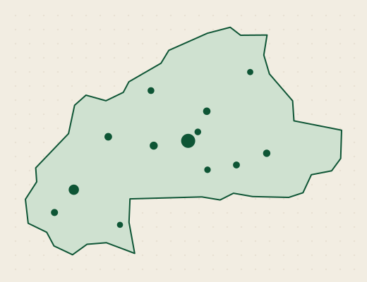

Vérifications · 7 jours
0
+8,4 %
vs semaine précédente
Faso FDA · Direction des médicaments
Le pouls du dispositif au 24 octobre 2026. Volumes, verdicts, alertes ouvertes et état du canal SMS.
Maquette de pilotage. Toutes les valeurs, officines et alertes sont fictives. Cette page sert à valider la structure d'information avec la Faso FDA.
Inventaire des pages7 derniers jours · tous canaux · comparaison avec la semaine précédente
3 signaux à qualifier
Le signal CF-8812 dépasse le délai de qualification de 24 h. Un rappel national est déjà en ligne ; la fiche doit être clôturée.
87 312 réponses · 7 jours
Vérifications par jour · 13 villes suivies

httpSMS · SIM +226 70 00 00 00
Dernier message traité : BF3T8N5R2W5 → DEJA_UTILISE.
Flux temps réel · numéros masqués
| Heure | Code | Produit / lot | Canal | Verdict | Latence |
|---|---|---|---|---|---|
| 10:48:12 | BF7K2M9Q4XZ | Paracétamol 500 mgBF-2291 | SMS | Authentique | 6,1 s |
| 10:47:54 | BF3T8N5R2W5 | Amoxicilline 500 mgAMX-1180 | SMS | Déjà utilisé | 7,4 s |
| 10:46:38 | BFH4P7V2KDG | Artéméther-LuméfantrineAL-0921 | Pharmacie | Expiré | 2,3 s |
| 10:45:02 | BF9C6B3Z8M4 | Ceftriaxone 1 gCF-8812 | SMS | Rappelé | 8,8 s |
| 10:44:41 | BF5J7Y2N4T8 | Non identifié— | SMS | Inconnu | 5,0 s |
| 10:43:19 | BF7K2M9Q4XZ | Paracétamol 500 mgBF-2291 | API | Authentique | 0,4 s |
Sur 7 jours
Vérifications aujourd'hui
Le taux d'authenticité ne mesure pas la qualité des médicaments : il mesure la part des codes qui correspondent à un lot actif, non expiré et non déjà utilisé. Un taux élevé peut coexister avec des lots contrefaits non déclarés.